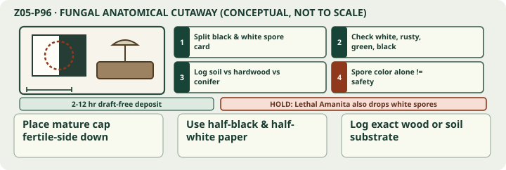

Z05-P96 · Wild foods and poisonous lookalikes · New manuscript
Spore-Print Collection and Fungal Substrate Documentation
Record diagnostic spore-deposit color on split black-and-white paper alongside exact host-tree and substrate context.
When it applies · Documenting mature gilled, pored, and toothed mushrooms for mycological study.
Equipment · Half-black/half-white clean paper card, glass cover, wax/paper bag, notebook.

Actions
- Collect a spore print by resting a mature fresh cap fertile-side down across both black and white halves of a clean card under a draft shield for 2–12 hours so white, cream, pink, green, rusty-brown, or black spores show clearly.[B05]
- Record exact substrate and nearby host trees—soil/duff versus living or dead hardwood versus conifer wood—because lookalike pairs like honey mushrooms (white spores) and deadly Galerina (rusty-brown spores) grow on identical deadwood.[B05, B08]
- Treat a spore print as one necessary character among many—never as a standalone edibility proof, because lethal Amanita species and safe mushrooms both drop white spores.[B05, B06, B24]
Failure recognition · Relying on gill color instead of a true spore print confuses green-spored toxic Chlorophyllum molybdites or rusty-spored Galerina marginata with edible lookalikes.[B05, B08]
Verify · True spore-deposit color on black/white paper, gill attachment, and substrate/host tree are logged together under HOLD.[B05]
Stop or change course · Stop identification if no spore deposit forms, specimen is moldy/decayed, or young veiled gills obscure maturity.[B05, B24]
Evidence and editorial notes
- B05 · MyCoPortal · North American Fungal Voucher Collections Portal (Current web edition)
- Section: Separate fungal voucher collections and microscopic/macro traits · Conditions: Documenting macrofungi across North American collections
Support: Fungal taxonomy requires distinct anatomical schemas (cap, gills/pores/teeth, attachment, ring, volva, spore print, substrate, and often microscopy).
Limitations: Fungal species complexes frequently overlap macroscopically; photos alone cannot confirm edibility. · Conflicting evidence: None noted.
Editorial note: Keeps botanical and fungal schemas separate. · Specialist reviewer: Qualified mycologist
Primary source · checked 2026-11-25 - B06 · CDC MMWR · Notes from the Field: Severe Mushroom Poisoning — Minnesota 2018 (MMWR 68(21))
- Section: Minnesota severe mushroom poisoning outbreak (MMWR 68:21) · Conditions: Wild mushroom foraging and lookalike misidentification in Minnesota
Support: Foragers in Minnesota suffered severe hepatotoxic poisoning after mistaking lethal amatoxin-containing mushrooms for familiar edible species.
Limitations: Delayed gastrointestinal onset (6-24+ hours) followed by a false recovery phase precedes liver failure; treat any wild mushroom ingestion with symptoms as a medical emergency. · Conflicting evidence: None noted.
Editorial note: Critical Minnesota fungal hazard evidence. · Specialist reviewer: Medical toxicologist and mycologist
Primary source · checked 2026-11-25 - B08 · North American Mycological Association · Mushroom Poisoning Syndromes Reference (Current web edition)
- Section: Mushroom poisoning syndrome classes and specimen retention · Conditions: Evaluating suspected wild fungal exposure
Support: Mushroom toxins span distinct syndromes (amatoxins, gyromitrin, orellanine, muscarine, ibotenic acid, GI irritants) with onset from minutes to days.
Limitations: Save remaining uneaten mushroom pieces in a paper bag (not sealed plastic) for mycologist identification if exposure occurs, and call Poison Control immediately. · Conflicting evidence: None noted.
Editorial note: Grounds Z05 fungal toxicology & emergency referral. · Specialist reviewer: Mycology toxicology reviewer
Primary source · checked 2026-11-25 - B24 · CDC MMWR · Notes from the Field: Severe Mushroom Poisoning — Minnesota 2018 (MMWR 68(21))
- Section: Rejection of folklore edibility tests and AI-only visual clearance · Conditions: All wild plant, berry, root, and fungal screening
Support: Universal skin/lip rub tests, silver-spoon tests, animal-browsing observations, single photos, and generated illustrations never establish edibility.
Limitations: If any diagnostic feature, site-contamination history, or expert review is missing, consumption remains strictly WITHHELD. · Conflicting evidence: None noted.
Editorial note: Enforces Z05 fail-closed edibility rule. · Specialist reviewer: Botanist, mycologist, and clinical toxicologist
Primary source · checked 2026-11-25
Source lineage · New manuscript (Z05 P19-C mycology workflow) · Classification · New manuscript.